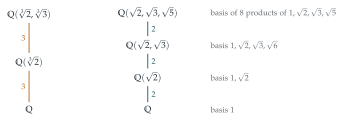

Show that, if \(\bigl(x - \sqrt2\bigr)^2 = 3\), then \(x^4 - 10x^2 + 1 = 0\).
Deduce that, if \(\mathrm{f}(x) = x^4 - 10x^2 + 1\), then \(\mathrm{f}\bigl(\sqrt2 + \sqrt3\bigr) = 0\).
Find a polynomial \(\mathrm{g}\) of degree \(8\) with integer coefficients such that \(\mathrm{g}\bigl(\sqrt2 + \sqrt3 + \sqrt5\bigr) = 0\). Write your answer in a form without brackets.
Let \(a\), \(b\) and \(c\) be the three roots of \(t^3 - 3t + 1 = 0\).
Find a polynomial \(\mathrm{h}\) of degree \(6\) with integer coefficients such that \(\mathrm{h}\bigl(a + \sqrt2\bigr) = 0\), \(\mathrm{h}\bigl(b + \sqrt2\bigr) = 0\) and \(\mathrm{h}\bigl(c + \sqrt2\bigr) = 0\). Write your answer in a form without brackets.
Find a polynomial \(\mathrm{k}\) with integer coefficients such that \(\mathrm{k}\bigl(\sqrt[3]2 + \sqrt[3]3\bigr) = 0\). Write your answer in a form without brackets.
The hook
\(\sqrt2\) is a root of \(x^2 - 2\), a polynomial with integer coefficients. So is \(\sqrt3\), of \(x^2 - 3\). Is \(\sqrt2 + \sqrt3\) also the root of some polynomial with integer coefficients? What about \(\sqrt2 + \sqrt3 + \sqrt5\), or \(\sqrt[3]2 + \sqrt[3]3\)?
Numbers that are roots of polynomials with integer coefficients are called algebraic, and this question shows, by hands-on elimination, that sums of algebraic numbers are algebraic. The degrees that come out, \(4\), \(8\), \(6\), \(9\), are not accidents. They measure how “complicated” each number is, and that measurement, the degree of a field extension, is what finally settled the ancient Greek problems of doubling the cube and trisecting the angle.
Before you start
To find a polynomial with \(\sqrt2\) as a root, you square \(x = \sqrt2\) to get rid of the square root. How might you get rid of two different square roots, one at a time?
Isolate one square root and square, which removes it; then isolate the other and square again. Each squaring may double the degree. That is the whole strategy of the question: eliminate the radicals one at a time.
Working it through
Stage 1 Two square roots
If \((x - \sqrt2)^2 = 3\), then \(x^2 - 2\sqrt2\,x + 2 = 3\), so \(x^2 - 1 = 2\sqrt2\,x\). Squaring removes the remaining square root: \((x^2 - 1)^2 = 8x^2\), that is, \[x^4 - 10x^2 + 1 = 0. \qed\] And \(x = \sqrt2 + \sqrt3\) satisfies \((x - \sqrt2)^2 = (\sqrt3)^2 = 3\), so \(\mathrm{f}(\sqrt2 + \sqrt3) = 0\).■
Stage 2 Three square roots
Let \(x = \sqrt2 + \sqrt3 + \sqrt5\), so \(x - \sqrt5 = \sqrt2 + \sqrt3\) is a root of \(\mathrm{f}\). Write \(\mathrm{f}(x - \sqrt5) = 0\) in the form \(P(x) + \sqrt5\,Q(x) = 0\). How do you then eliminate \(\sqrt5\)?
Expand using \((x - \sqrt5)^2 = x^2 + 5 - 2\sqrt5 x\) and \((x - \sqrt5)^4 = \bigl(x^2 + 5 - 2\sqrt5x\bigr)^2 = x^4 + 30x^2 + 25 - 4\sqrt5\,x(x^2 + 5)\): \[\mathrm{f}(x - \sqrt5) = \bigl(x^4 + 30x^2 + 25\bigr) - 4\sqrt5\,x(x^2 + 5) - 10\bigl(x^2 + 5\bigr) + 20\sqrt5\,x + 1.\] Collecting, \(P(x) = x^4 + 20x^2 - 24\) and \(Q(x) = -4x^3 - 20x + 20x = -4x^3\). So \(x^4 + 20x^2 - 24 = 4\sqrt5\,x^3\). Squaring, \[\bigl(x^4 + 20x^2 - 24\bigr)^2 = 80x^6,\] and expanding gives \[\mathrm{g}(x) = x^8 - 40x^6 + 352x^4 - 960x^2 + 576. \qed\] (Check: \((x^4 + 20x^2 - 24)^2 = x^8 + 40x^6 + 352x^4 - 960x^2 + 576\), using \(400 - 48 = 352\), and subtracting \(80x^6\) gives \(\mathrm{g}\).)
Stage 3 A cubic and a square root
If \(x = a + \sqrt2\), then \(x - \sqrt2\) is a root of \(t^3 - 3t + 1\). Substitute, separate the terms with and without \(\sqrt2\), and square.
\((x - \sqrt2)^3 = x^3 - 3\sqrt2\,x^2 + 6x - 2\sqrt2\), so \[(x - \sqrt2)^3 - 3(x - \sqrt2) + 1 = \bigl(x^3 + 3x + 1\bigr) - \sqrt2\bigl(3x^2 - 1\bigr) = 0.\] Hence \((x^3 + 3x + 1)^2 = 2(3x^2 - 1)^2\). Expanding, \(x^6 + 6x^4 + 2x^3 + 9x^2 + 6x + 1 = 18x^4 - 12x^2 + 2\), so \[\mathrm{h}(x) = x^6 - 12x^4 + 2x^3 + 21x^2 + 6x - 1. \qed\] The same argument works for \(b + \sqrt2\) and \(c + \sqrt2\), since only the fact that \(a\) is a root of \(t^3 - 3t + 1\) was used. (The other three roots of \(\mathrm{h}\) are \(a - \sqrt2\), \(b - \sqrt2\) and \(c - \sqrt2\), which came in when we squared.)
Stage 4 Two cube roots
Let \(x = \sqrt[3]2 + \sqrt[3]3\). Cube both sides. Can you write the result in terms of \(x\) and a single cube root?
Using \((u + v)^3 = u^3 + v^3 + 3uv(u + v)\) with \(u = \sqrt[3]2\), \(v = \sqrt[3]3\): \[x^3 = 2 + 3 + 3\sqrt[3]6\,x, \qquad\text{so}\qquad x^3 - 5 = 3\sqrt[3]6\,x.\] Cubing again removes the last cube root: \((x^3 - 5)^3 = 27 \cdot 6\,x^3 = 162x^3\). Expanding \((x^3 - 5)^3 = x^9 - 15x^6 + 75x^3 - 125\), \[\mathrm{k}(x) = x^9 - 15x^6 - 87x^3 - 125. \qed\]
Looking back
Eliminate one radical at a time. Isolate a radical, raise to the appropriate power, and repeat.
Separate rational and irrational parts. Writing an expression as \(P + \sqrt5\,Q\) and then using \(P^2 = 5Q^2\) is the key move.
Squaring adds extra roots. Each squaring brings in “conjugate” roots, such as \(a - \sqrt2\) alongside \(a + \sqrt2\). The final polynomial has all of them as roots.
What’s really going on
The set \(\mathbb{Q}(\sqrt2)\) of all numbers \(p + q\sqrt2\) with \(p\), \(q\) rational is closed under addition, subtraction, multiplication and division (by non-zero numbers): it is a field. It is a two-dimensional “vector space” over \(\mathbb{Q}\), with basis \(1, \sqrt2\), so we say it has degree \(2\) over \(\mathbb{Q}\). Adjoining \(\sqrt3\) gives \(\mathbb{Q}(\sqrt2, \sqrt3)\), with basis \(1, \sqrt2, \sqrt3, \sqrt6\) and degree \(4\); adjoining \(\sqrt5\) as well gives degree \(8\) (Figure 6.3.1). The tower law says degrees multiply up a tower of fields. The degree of the field generated by a number equals the degree of its minimal polynomial, the lowest-degree polynomial with rational coefficients that it satisfies. One can show that the polynomials \(\mathrm{f}\) and \(\mathrm{g}\) in this question are minimal, so \(\sqrt2 + \sqrt3\) has degree \(4\) and \(\sqrt2 + \sqrt3 + \sqrt5\) has degree \(8\): in fact the single number \(\sqrt2 + \sqrt3 + \sqrt5\) generates the whole degree-\(8\) field.

Doubling the cube
Ruler-and-compass constructions can only produce lengths obtained from rational numbers by repeatedly solving linear and quadratic equations. Each such step gives a field extension of degree \(1\) or \(2\), so by the tower law every constructible length lies in a field of degree a power of \(2\), and has degree a power of \(2\) itself. But \(\sqrt[3]2\) has minimal polynomial \(x^3 - 2\), of degree \(3\). Since \(3\) is not a power of \(2\), \(\sqrt[3]2\) is not constructible, and the Delian problem of doubling the volume of a cube with ruler and compasses, posed around 430 BC, is impossible. Pierre Wantzel proved this in 1837, together with the impossibility of trisecting a general angle and the classification of constructible polygons (Section 6.2). Two thousand years of attempts were ended by an argument about degrees.
Algebraic numbers form a field
The method of this question shows, in examples, that sums of algebraic numbers are algebraic. In general this is proved with linear algebra: if \(\alpha\) and \(\beta\) have degrees \(m\) and \(n\), then all the numbers \(\alpha^i\beta^j\) (with \(i < m\), \(j < n\)) span a space of dimension at most \(mn\), and the \(mn + 1\) powers \(1, \alpha + \beta, (\alpha + \beta)^2, \ldots\) must be linearly dependent, which gives a polynomial of degree at most \(mn\). Our degrees \(4 = 2 \times 2\), \(6 = 3 \times 2\) and \(9 = 3 \times 3\) fit this pattern exactly. Numbers that are not algebraic are called transcendental; \(e\) and \(\pi\) are examples (Hermite, 1873, and Lindemann, 1882), and Lindemann’s theorem that \(\pi\) is transcendental proved that squaring the circle is impossible too.
The thinking skill
To find a polynomial satisfied by an expression in radicals, remove the radicals one at a time by isolating and raising to a power.
Then ask what the degree tells you. The degree of the minimal polynomial is an invariant of the number, and comparing degrees is one of the most powerful ways to prove that something is impossible.
Try this next
A primitive element. Let \(y = \sqrt2 + \sqrt3\). Show that \(y^3 = 11\sqrt2 + 9\sqrt3\), and deduce that \(\sqrt2 = \frac12(y^3 - 9y)\). Hence every number \(p + q\sqrt2 + r\sqrt3 + s\sqrt6\) can be written as a polynomial in \(y\).
Mixed roots. Find a polynomial of degree \(6\) with integer coefficients that has \(\sqrt2 + \sqrt[3]3\) as a root.
Irreducibility. Show that \(x^4 - 10x^2 + 1\) has no rational roots and cannot be written as a product of two quadratics with integer coefficients. (Hint: try \((x^2 + ax + b)(x^2 - ax + c)\).) Deduce that \(\sqrt2 + \sqrt3\) has degree \(4\).
Trisection. Show that \(\cos 3\theta = 4\cos^3\theta - 3\cos\theta\), and deduce that \(\cos 20^\circ\) is a root of \(8x^3 - 6x - 1 = 0\). Assuming this cubic has no rational roots (check this), explain why a \(60^\circ\) angle cannot be trisected with ruler and compasses.
Further reading
Ian Stewart, Galois Theory (CRC Press). Field extensions, the tower law and the classical construction problems, written for undergraduates.
Richard Courant & Herbert Robbins, What Is Mathematics? (Oxford University Press). Chapter 3 proves the impossibility of the Greek problems with no prerequisites.
Robin Hartshorne, Geometry: Euclid and Beyond (Springer). Ruler-and-compass constructions treated with modern algebra.